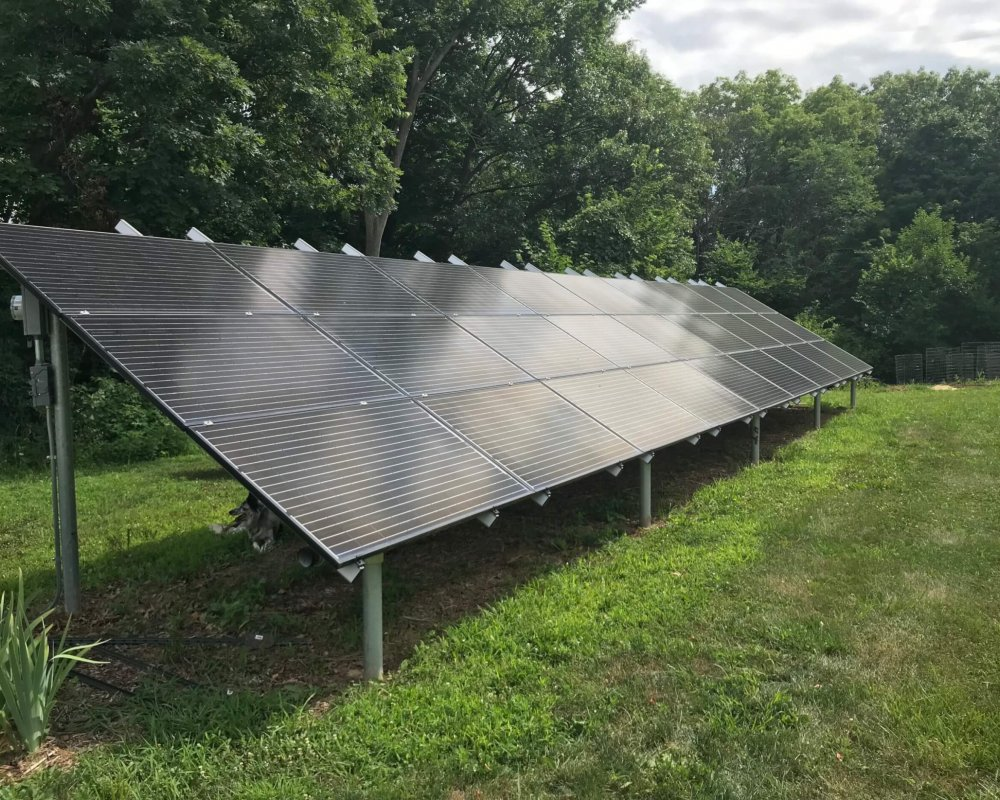
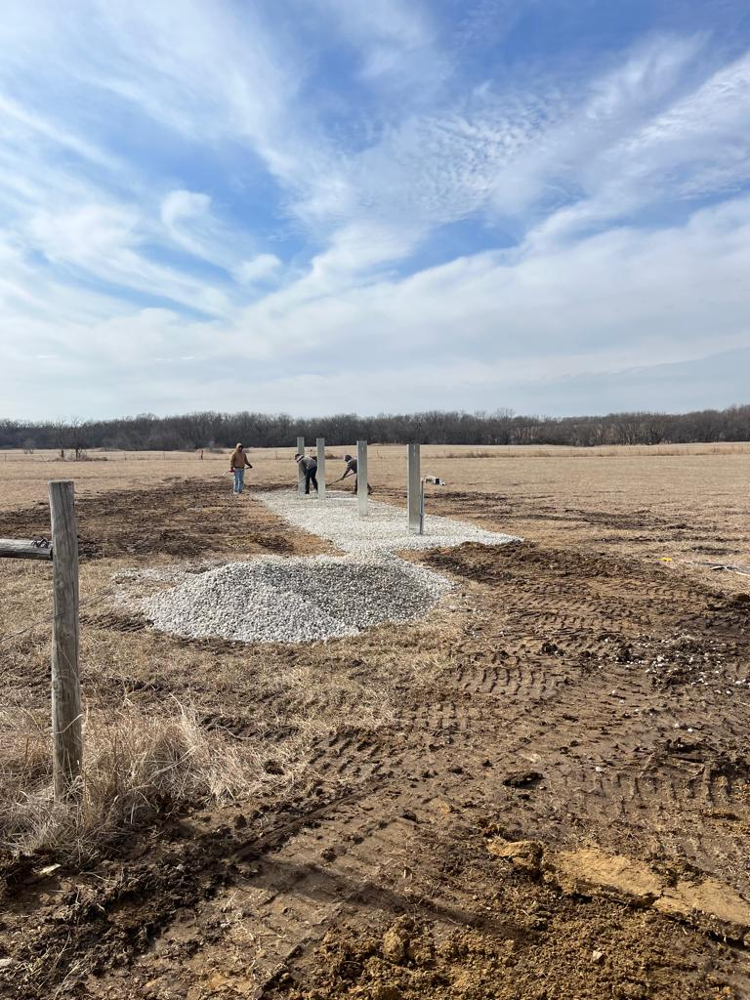
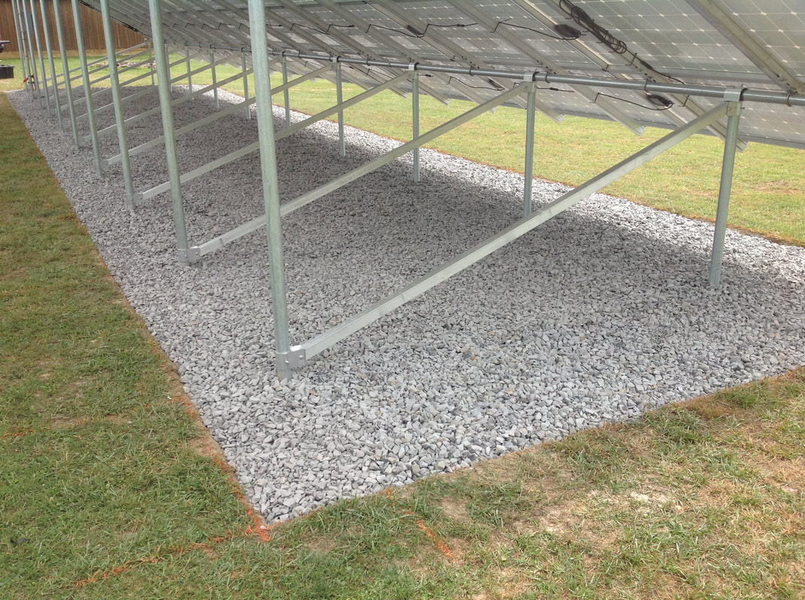
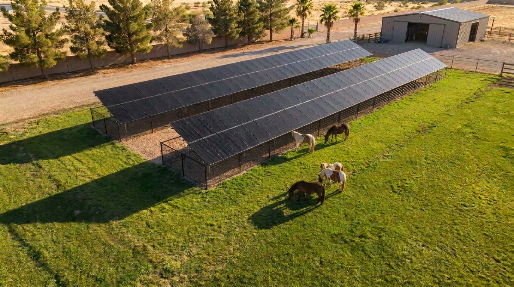
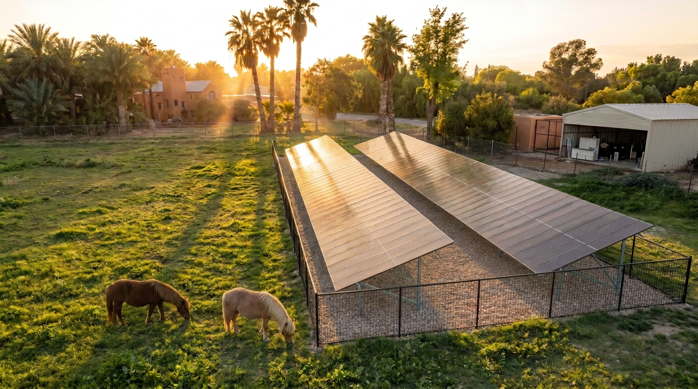

I did my due diligence on this one — went through my farm customers across Texas, Arizona, and Nevada (pastures, ground mounts, animals, same situation as yours), plus what the agricultural universities and NREL publish for arrays on working fields. After all of it, the best setup for your system and your field came out clear: the win isn't in lifting the panels — it's in what goes under and around them. Here's the build, and by the end you'll see it handles every concern you raised — and even adds production doing it.
What the farms that live with this actually do
The standard practice is gravel — and it exists for exactly the reason you raised. A light gravel bed under and around the arrays means nothing grows there — so there's simply nothing to mow near the panels, ever. The mower and anything it can throw stay out in the pasture where they belong; NREL's guidance for solar on working land points to exactly this setup. And worth saying plainly: your panels are Tier-1 modules with hail-rated tempered glass — built and certified to take impacts well beyond pasture debris. The gravel isn't there because the panels are fragile; it's there so the question never comes up. It carries your dust concern in the same stroke — gravel is Clark County's own approved dust-stabilization method, so the ground under the array stops producing dust the day it goes down. Cost-wise it's a rounding error next to steel: your pad works out to roughly 18–20 tons of rock at a 2-inch depth — at Las Vegas rock-yard pricing (the same Star Nursery yards you're already running to carry exactly this class of rock), that's on the order of $1,100–$1,600 in materials including the weed fabric, or roughly $3,000–$5,500 delivered, spread, and finished by a landscape crew.
The experienced operators take it one step further — and your design is already built for it. They run bifacial panels over deliberately light-colored gravel, because the bright ground reflects additional light into the rear faces of the modules. The same layer that removes the mower risk becomes a production supplement — your panels are bifacial, so on your field the protection measure pays you back in kilowatt-hours.
The operating rule that goes with it: whenever the surrounding pasture is mowed, the discharge chute points away from the arrays — the same one-line protocol the solar farms run. With the gravel zone in place it's belt-and-suspenders, but it costs nothing and it's how the professionals write it up.
If you want a further layer, there's a clean one: a wire-mesh run on driven T-posts — mesh from the ground up to 2–3 feet — around the outside of the mounts. It intercepts anything thrown from a distance and keeps the animals off the wiring, and it reads like ranch fencing, not construction — roughly $600–$1,100 in posts and mesh for the full perimeter. Which puts the complete treatment — gravel, fabric, and the mesh run, professionally done — in the $4,000–$6,500 range all-in. Against the ~$60k steel quote, that's the same list of concerns solved for roughly a tenth of the cost, with the production bonus riding on top. Most operations find the gravel alone settles it — and since the mesh is just driven T-posts, it can go in any time after the install, so it never holds anything up. Live with the system first, add it later if you ever want it.
And on the carport idea — I ran it all the way down
I took your LV Iron & Steel suggestion seriously — priced the route, ran the tax treatment, looked at what that build actually involves. Two things ruled it out. First, the 30% doesn't touch it: the federal credit applies to the solar equipment itself — panels, batteries, racking — not to a standalone structure. So the steel building would be a large check with zero discount on it, on top of a system that already comes with everything you need. Second, it's a much bigger buildout — its own engineering, its own permits, its own construction schedule — for a result the design below already delivers.
Out of everything I looked at — and I looked at a lot — this is the one that makes the most sense: a fraction of the cost, the arrays still throw the long shade lines the animals will use, nobody ever needs to mow near the panels, and the fence covers everything the gravel doesn't. Every concern you raised, handled, without the building.




